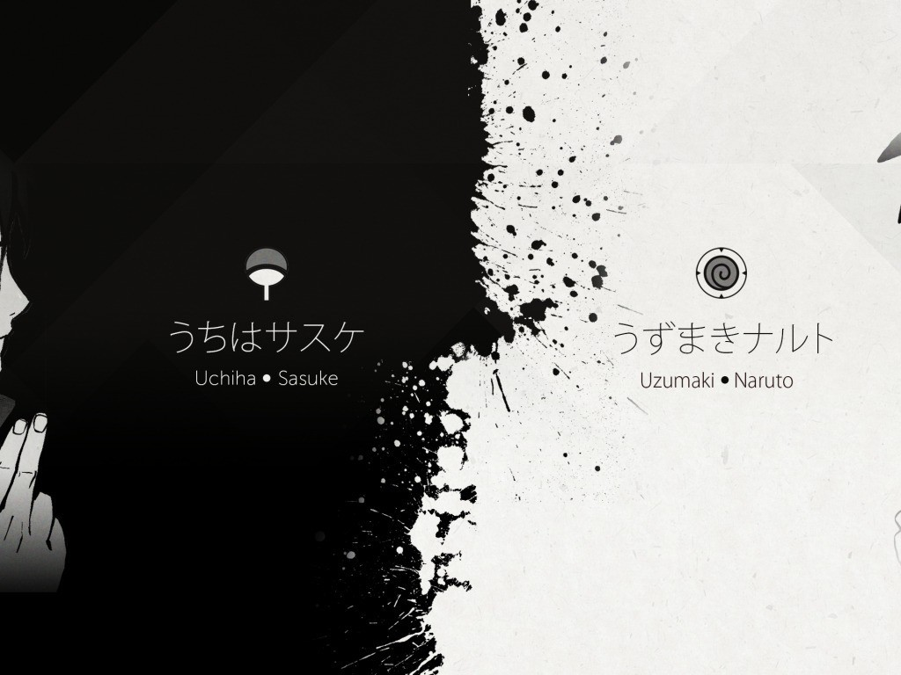

Aqui esta un parragfo con Id y un lick
Aquí esta un parrafo con clase y lick
Aqui esta un parragfo con Id y un lick
Aquí esta un parrafo con clase y lick
Naruto es una serie de manga y anime creada por Masashi Kishimoto. La historia se centra en Naruto Uzumaki, un joven ninja que busca ser reconocido como el líder de su aldea y ser el Hokage, el ninja más poderoso de todos. La serie está llena de acción, aventuras y amistad.
